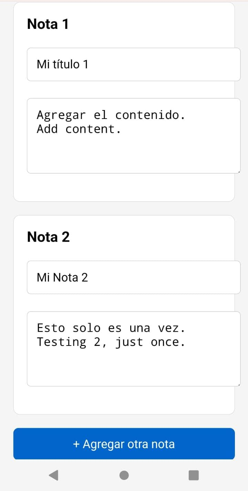
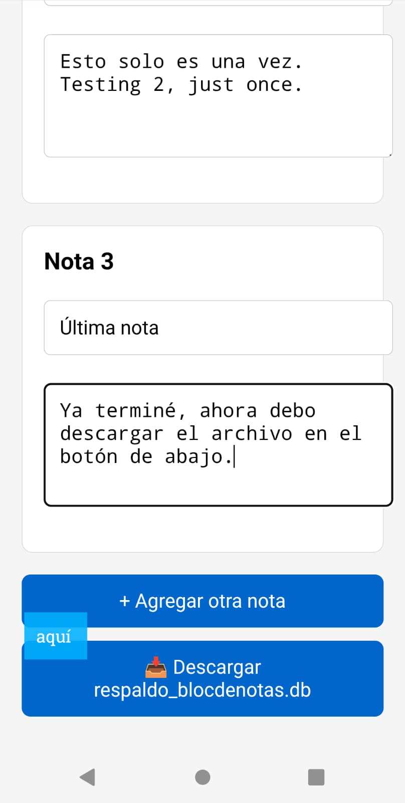
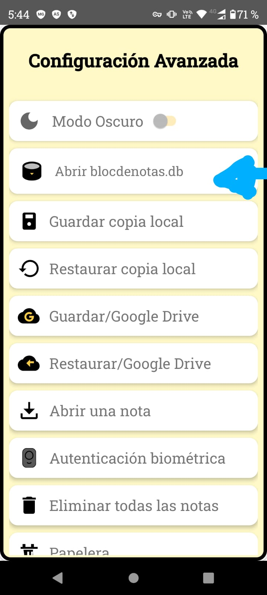

👉 Here’s a step-by-step guide to save your notes before updating the app so you don't lose anything important.
Open your current notes app and find all the important notes you want to keep. You must paste them one by one in the backup form I created — you decide how many notes to save.

Open each note, select the title and content, copy them, and paste them into the form. Then tap Add another note.
Click on 📥 Download respaldo_blocdenotas.db and save the file to your phone 📱.
Once you’ve saved all your notes, go to the new version from this link:

In the new app, select the option Open blocdenotas.db which you’ll find in the configuration menu at the top-right button — it’s the second option there.
After accepting, choose the file you downloaded named respaldo_blocdenotas.db.
Once selected, you should have all your notes restored in the new version. Congratulations — we made it together!
Now you can enjoy all the new features in the updated app, and remember to use the local backup and Google Drive backup options too. If you have any questions, feel free to write me at jikansoftware@gmail.com. Thanks so much for your trust, and blessings! 🙏